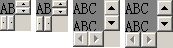
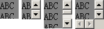
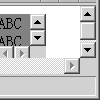
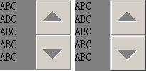
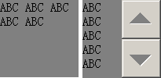

无。
在 Firefox 中，当元素设置有滚动条，其尺寸小于迫使其滚动条的两个箭头按钮相碰的临界值时，滚动条可能会消失。
这个现象仅在 Firefox 中出现，会造成设置的滚动条在 Firefox 中消失。
| Firefox |
|---|
请看以下测试用例。
分析以下代码：scrollbar.html
<style> div { background:gray; overflow:scroll; float:left; margin-right:5px; } </style>
<div style="width:31px; height:31px;"> ABC ABC ABC ABC ABC </div> <div
style="width:32px; height:32px;"> ABC ABC ABC ABC ABC </div> <div
style="width:47px; height:47px;"> ABC ABC ABC ABC ABC </div> <div
style="width:48px; height:48px;"> ABC ABC ABC ABC ABC </div>
上面代码中的 4 个 DIV 元素宽度和高度分别为 31px、32px、47px、48px，通过 overflow:scroll 为其设置了垂直与水平滚动条。
确定当前 Windows 的系统主题为“Windows 经典”，并且没有单独调整滚动条的大小，为默认的 16px。
在各浏览器中效果如下：
| IE6 IE7 IE8 Chrome Safari Opera | Firefox |
|---|---|
|  |  |
下面的动画更能展现Firefox中的这个特点：

此现象与操作系统设置的滚动条尺寸有关，如将系统的滚动条设置为 50px：
在修改测试代码：
<style> div { background:gray; overflow-y:scroll; float:left; margin-right:5px; } </style>
<div style="width:100px; height:99px;"> ABC ABC ABC ABC ABC </div> <div
style="width:100px; height:100px;"> ABC ABC ABC ABC ABC </div>
在各浏览器中效果如下：
| IE6 IE7 IE8 Chrome Safari Opera | Firefox |
|---|---|
|  |  |
可见，Firefox 这里依然在元素高度小于“操作系统设置的滚动条大小”的 2 倍时，即滚动条的两个箭头按钮相碰后，整个滚动条消失。
而对于 Windows 7 及 Vista 的 Aero 主题，这个迫使滚动条消失的临界值为 34px。
针对 Firefox 中的这种特有现象，在确定不需要滚动条时为元素设置 'overflow:hidden'，并且合理地为需要携带滚动条元素设置其宽度及高度。
| 操作系统版本: | Windows 7 Ultimate build 7600 |
|---|---|
| 浏览器版本: |
IE6
IE7 IE8 Firefox 3.6.2 Chrome 5.0.360.0 dev Safari 4.0.5 Opera 10.51 |
| 测试页面: | scrollbar.html |
| 本文更新时间: | 2010-07-14 |
scrollbar scroll Firefox overflow 滚动条